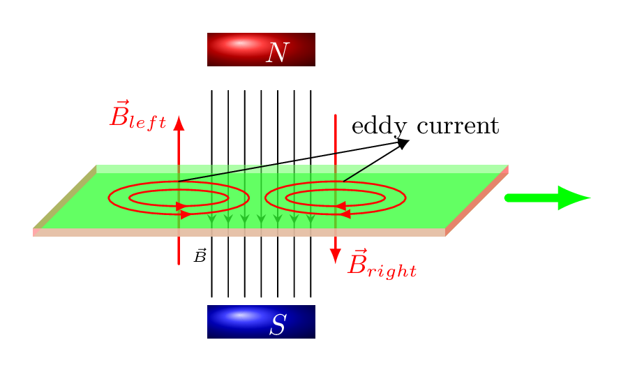
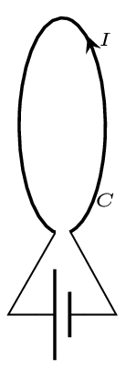
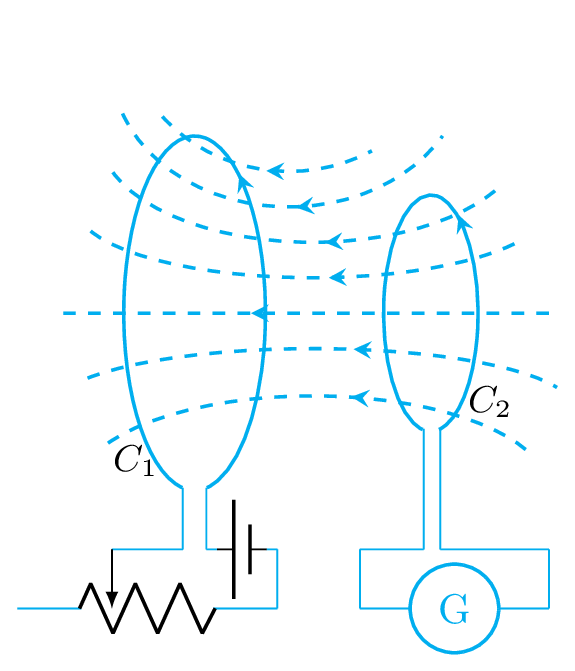
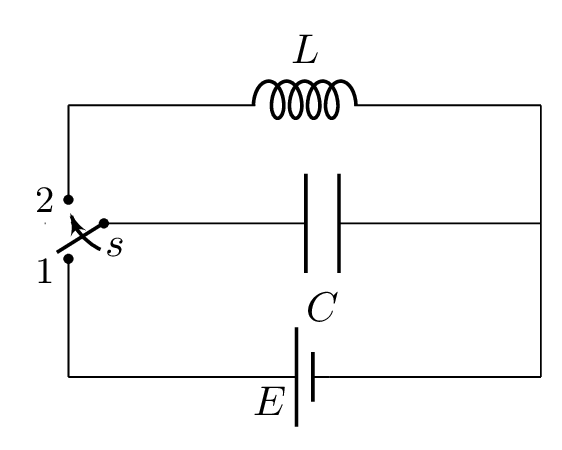
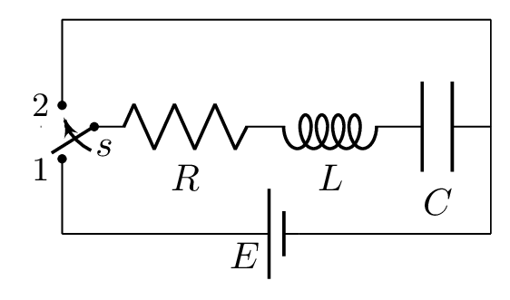
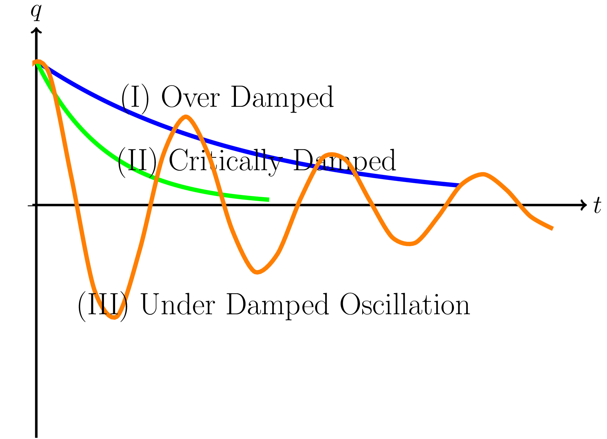

Section 3.7 Electromagnetic Induction
Orsted discovered that electric currents can produce magnetic fields. Faraday discovered that magnetic fields can be used to induce electric currents. It has been seen from experiments that whenever there is a change in magnetic flux linked with the closed circuit, am emf (or current) is induced in that circuit and lasts as long as this change happen. This phenomenon is known as electromagnetic induction. The magnetic flux through a circuit may be changed in the following ways:
-
by relative motion between a magnet and the circuit,
-
by changing current in the same circuit,
-
by changing current in the neighbouring circuit, and
-
by rotating a coil in a magnetic field.
Electromagnetic induction is a process of producing an emf across the conductor by making a relative motion between the conductor and magnetic field. In other word, producing an emf across the conductor by placing a conductor in a changing magnetic field or moving a conductor through a stationary magnetic field. This process causes an electrical current in a conductor known as induced current.
A moving electrical charge also generates a magnetic field just as changing magnetic field induces current in a conductor. In fact, a traditional magnet is the result of the individual motion of the electrons within the individual atoms of the magnet, aligned so that the generated magnetic field is in a uniform direction as shown in Figure 3.1.3.(b). (In non-magnetic materials, the electrons move in such a way that the individual magnetic fields point in different directions, so they cancel each other out and the net magnetic field generated is negligible.)
Induced emf: It is a voltage produced in a coil because of the changing magnetic flux through a coil. An EMF can be induced in two ways, i.e., when an electric conductor is kept in a moving magnetic field or when the electric conductor is constantly moving within a static magnetic field.
Subsection 3.7.1 Faraday’s Law
If the magnetic field changes, or if the magnet and coil are in relative motion, there will be an induced emf (and therefore current) in the coil. The instantaneous EMF (voltage) induced in a circuit is proportional to the rate of change of magnetic flux through the circuit. If \(\Phi\) is magnetic flux linked with the circuit at any instant of time and \(\varepsilon\) is an induced emf, then
\begin{equation*}
\varepsilon \propto \frac{\,d\Phi}{\,dt}.
\end{equation*}
The direction of induced emf is such that it opposes the change in flux which produces it. Hence,
\begin{equation*}
\varepsilon = - \frac{\,d\Phi}{\,dt}.
\end{equation*}
The minus sign indicates the direction of the induced emf. If there are N number of turns in current loops, then
\begin{equation*}
\varepsilon = - N \frac{\,d\Phi}{\,dt}.
\end{equation*}
When the magnetic flux inside a closed loop of wire (coil) changes, emf is induced in the wire,
\begin{equation*}
|emf| = \frac{\phi_{f}-\phi_{i}}{t_{f}-ti_{i}}
\end{equation*}
-
The induced emf generates a current in the wire, \(I=\frac{emf}{R}\)
-
The direction of the current is determined by the Lenz’s law.
Subsection 3.7.2 Lenz’s Law
An induced current always flows in a direction that opposes the change that caused it. In other word, -ve sign in Faraday’s law is Lenz’s contribution. The changing magnetic flux generates an emf according to Faraday, the polarity of this emf is such that it induces the current in a circuit whose magnetic field opposes the change which produces it, according to Lenz.
Lenz’s Law Suppose a bar magnet is moving towards a coil, then an emf is induced in the coil and current starts flowing in a circuit (coil). The direction of this induced current will be such that it opposes the motion of the magnet towards the coil.
1
sklkarn.github.io/Lab_anim/lenz_law.htmlThe induced emf resulting from a changing magnetic flux has a polarity that leads to an induced current whose direction is such that the induced magnetic field opposes the original flux change.
-
When the magnetic flux is increasing, a magnetic field opposing to the increasing field is generated by induced current.
-
When the magnetic flux is decreasing, a magnetic field in the same direction as the decreasing field is generated by the induced current.
Subsection 3.7.3 Motional Electromotive Force
An emf will also be produced if a conductor moves through a magnetic field. The emf comes from the motion of charges, which are free to move in the conductor. If a rod is moving in a magnetic field positive charges collected at on edge of the conductor and negative charge at the opposite edge.
Subsection 3.7.4 Induced Electric Fields
Subsubsection 3.7.4.1 Eddy Currents
When a conductor is moved in a magnetic field, there is a force on the electrons, which then move in the metal. This movement is called an eddy current. The induced currents produce magnetic fields which tend to oppose the motion of the metal. An eddy current is a swirling current set up in a conductor in response to a changing magnetic field. According to Lenz’s law the current swirls in the conductor in such a way that it opposes the changing magnetic field. To do so in a conductor, electrons swirl in a plane perpendicular to the magnetic field. As the metal enters into the magnetic field, flux starts increasing so to oppose this flux electrons of metal make loop in such a way that the induced current has magnetic field opposing the increase. As the metal plate begins leaving the magnetic field current loops on metal surface just in opposite direction to the previous loops as shown in Figure 3.7.2.

Because of the tendency to oppose, eddy currents cause energy to be lost. Due to eddy currents kinetic energy transforms into heat energy. One of the practical applications of eddy currents is magnetic braking. During braking, the metal wheels are exposed to a magnetic field from an electromagnet, generating eddy currents in the wheels. The magnetic interaction between the applied field and the eddy currents acts to slow the wheels down. The faster the wheels are spinning, the stronger the effect, meaning that as the train slows the braking force is reduced, producing a smooth stopping motion.
French physicist Leon Foucault in 1855 discovered eddy currents. He found that the force needed to rotate a copper disk when its rim is placed between the poles of a magnet, such as a horseshoe magnet, increases and the disk is heated by the induced eddy currents.
The heating effect originates from the transformation of electric energy into heat energy and is used in induction heating devices, like some cookers and welders. The resistance felt by the eddy currents in a conductor causes Joule heating and he amount of heat generated is proportional to the current squared. However, for applications like motors, generators and transformers, this heat is considered wasted energy and as such, eddy currents need to be minimized. This can be achieved by laminating the metal cores of these devices, where each core is made up of multiple insulated sheets of metal. This splits the core in many individual magnetic circuits and restricts the flow of the eddy currents through it, reducing the amount of heat generated through Joule heating.
Eddy currents can also be removed by cracks or slits in the conductor, which break the circuit and prevent the current loops from circulating. This means that eddy currents can be used to detect defects in materials. This is called nondestructive testing and is often used in airplanes. The magnetic field produced by the eddy currents is measured, where a change in the field reveals the presence of an irregularity; a defect will reduce the size of the eddy current, which in turn reduces the magnetic field strength.
Subsubsection 3.7.4.2 Generator
A generator is a device that converts mechanical energy to electrical energy. As Faraday’s law holds good for any shape of conductor moving in a magnetic field, this principle can be used to design electric dynamo or generator where a loop is rataing in a magnetic field.
Consider a closed rectangular loop C of number of turns N, area of each loop is A rotating in a uniform magnetic field B with angular velocity \(\omega\text{.}\) As the loop rotates, the flux linked with the coil changes and an emf is induced in the coil. Suppose at any instant the normal to plane of loop is making an angle \(\theta\) with the magnetic field B, then magnetic flux linked with loop at that time is given by
\begin{equation*}
\phi = N(\vec{B}\cdot\vec{A}) = NBA\cos\theta
\end{equation*}
\begin{equation*}
\therefore\quad \varepsilon =-N\frac{\,d\Phi}{\,dt} = -N\frac{\,d}{\,dt}(BA\cos\theta)
\end{equation*}
\begin{equation*}
= NBA\omega\sin\omega t = \varepsilon_{o} \sin\omega t
\end{equation*}
\([\because \theta = \omega t]\) where \(\varepsilon_{o} = NBA \omega\) = maximum emf.
If this loop is part of a circuit, this emf will induce an Alternating Current (AC) in the circuit. If R is the resistance of the circuit, the induced current in the circuit is given by
\begin{equation*}
i=\frac{\varepsilon}{R}= \frac{NBA\omega}{R}\sin\omega t= i_{o}\sin\omega t
\end{equation*}
where \(i_{o}\) is the amplitude of the ac current.
Subsubsection 3.7.4.3 Skin Effect
When a steady current flows through a wire, it is distributed uniformly over the entire cross-section of the wire. On the other hand, when an alternating current flows through the a wire, it is concentrated mostly near the outer surface of wire rather than the uniform distribution. This effect is called skin effect of alternating current. The skin effect increases with increasing frequency. In case of very high frequency current is almost wholly confined to the surface layer of the wire. This is the reason in ac transmission current carrier wire is made out of collection of many thin insulated stranded wires rather than one thick single wire. Electromagnetic induction is the cause of skin effect.
Subsubsection 3.7.4.4 Superconductivity
Superconductivity is a phenomenon that conduct electricity in an element, inter-metallic alloy, or compound without resistance when it is kept below a certain temperature and magnetic field
Emf of Moving Conductor:
\begin{equation*}
\varepsilon = \int(\vec{v} \times \vec{B})\cdot\vec{dl}
\end{equation*}
\begin{equation*}
\varepsilon = v B l
\end{equation*}
rod with everything perpendicular.
Induced Electric Field: (non-conservative)
\begin{equation*}
\oint \vec{E}\cdot\vec{dl} = -\frac{\,d\Phi_{B}}{\,dt}
\end{equation*}
Stationary Closed Path.
Maxwell’s Equations:
\begin{equation*}
\oint \vec{E}\cdot\vec{dA} = \frac{q_{enc}}{\epsilon_{o}} \quad \text{(Gauss's Law)}
\end{equation*}
\begin{equation*}
\oint \vec{B}\cdot\vec{dA} = 0 \quad \text{(Gauss's Law in Magnetism)}
\end{equation*}
\begin{equation*}
\oint \vec{E}\cdot\vec{dl} = -\frac{\,d\Phi_{B}}{\,dt} \quad \text{(Faraday's Law)}
\end{equation*}
\begin{equation*}
\oint \vec{B}\cdot\vec{dl} = \mu_{o}\left(I_{c} +\epsilon_{o}\frac{\,d\Phi_{E}}{\,dt}\right) \quad \text{(Generalized Ampere's Law)}
\end{equation*}
Subsection 3.7.5 Self-Inductance:
The phenomenon of the production of induced emf in a circuit itself due to the change in current through it is called self induction and induced emf is called back emf. The delayed response of changing current in a circuit like solenoid is due to a self induction. This is because the changing magnetic flux through the solenoid produces a self-induced emf to initially oppose any changes as prescribed by Lenz’s Law. This effect is known as coefficient of self-induction or self-inductance of the coil. Actually all circuit elements have some self-inductance. However, only coils with many turns of wire, such as in a solenoid, have substantial self-inductance.
Let current I is flowing through a circuit C [Figure 3.7.4]. This current will set up a magnetic field and hence a magnetic flux \(\Phi\) is linked with the circuit. As the magnetic field at any point is proportional to the current flowing through the circuit, the magnetic flux \(\Phi\) linked to the circuit at any instant is also proportional to the current I flowing through it at the same instant. For any geometry of loop, the magnetic flux through the loop, produced by the current in the loop is \(\Phi \propto I\)
\begin{equation*}
or, \quad \Phi =L I.
\end{equation*}
The inductance L is the constant of proportionality. Its unit is henery. When the current flowing through a circuit is changed, the magnetic flux linked with the circuit also changes and induced emf is set up in the circuit.

The rate of change of flux linked with the circuit is given by
\begin{equation*}
\frac{\,d\Phi}{\,dt}= L\frac{\,dI}{\,dt}
\end{equation*}
Therefore from Faraday’s law the emf induced in the circuit is
\begin{equation*}
\varepsilon = -\frac{\,d\Phi}{\,dt}= -L\frac{\,dI}{\,dt}
\end{equation*}
Which is also a Self-Induced Emf in an inductor and L is its inductance. If there are N number of turns in a coil then, self inductance is given by
\begin{equation*}
N\Phi =L I
\end{equation*}
\begin{equation}
\text{or,}\quad L = N\frac{\,d\Phi}{\,dI}\tag{3.7.1}
\end{equation}
The unit of Self-Inductance is Henry, H = Wb/A.
Subsubsection 3.7.5.1 Self-inductance of a solenoid:
Consider a solenoid of length l, cross-sectional area A, number of turns per unit length n, and current I is flowing through it then,
\begin{equation*}
B=\mu_{o}nI
\end{equation*}
\(\Phi = B \) (effective area of solenoid) = \(\mu_{o}nI (nlA) = \mu_{o}n^{2} AlI,\) but from definition, \(\Phi=LI.\)
\begin{equation}
\therefore\quad L= \mu_{o}n^{2} Al \tag{3.7.2}
\end{equation}
Subsubsection 3.7.5.2 Mutual Inductance:
The phenomenon of inducing emf in a neighboring circuit whenever a current is flowing through a circuit near it is known as mutual inductance. The circuit in which current changes is known as primary circuit, while the neighboring circuit in which emf is induced in called the secondary circuit.
Consider a circuit \(C_{2}\) is placed in a magnetic field of another circuit \(C_{1}\) as shown in Figure 3.7.5. The flux linked with circuit \(C_{2}\) depends upon its relative position with circuit \(C_{1}\) and current flowing through \(C_{1}.\) If \(i_{1}\) is the current flowing in circuit \(C_{1}\) and \(B_{1}(x,y,z)\) is the magnetic field at any point (x,y,z) in space around \(C_{1}\text{,}\) then the magnetic flux linked with the coil \(C_{2}\) is given by
\begin{equation*}
\Phi_{2} =\iint_{s_{2}} B_{1}\,dA_{2}
\end{equation*}
Where \(s_{2}\) represents the effective surface area enclosed by the coil \(C_{2}.\) If the shapes, orientations and the positions of the two circuits \(C_{1}\) and \(C_{2}\) are fixed, then the magnetic flux \(\Phi_{2}\) linked with the circuit \(C_{2}\) is proportional to the current \(i_{1}\) flowing in circuit \(C_{1}\) i.e.,
\begin{equation*}
\Phi_{2} \propto i_{1}
\end{equation*}
\begin{equation*}
\text{or}\quad \Phi_{2} = M_{21} i_{1}
\end{equation*}

Where \(M_{21}\) is constant of proportionality and is termed as mutual inductance of circuit \(C_{2}\) with respect to circuit \(C_{1}.\) Now, emf induced in a circuit \(C_{2}\) is
\begin{equation*}
\varepsilon_{2} = -\frac{\,d\Phi_{2}}{\,dt} = -M_{21}\frac{\,di_{1}}{\,dt}
\end{equation*}
Similarly, emf induced in a circuit \(C_{1}\) due current flowing in circuit \(C_{2}\) is
\begin{equation*}
\varepsilon_{1} = -\frac{\,d\Phi_{1}}{\,dt} = -M_{12}\frac{\,di_{2}}{\,dt}
\end{equation*}
If shapes, orientations, and the positions of the coils are fixed, then the mutual inductance of the two coils does not depend upon which circuits carries the current i.e., \(M_{21}=M_{12}\text{.}\) The mutual inductance of two neighboring coils and mutually induced emfs are given by the following equations.
\begin{equation}
M = \frac{N_{1}\Phi_{B1}}{I_{2}} = \frac{N_{2}\Phi_{B2}}{I_{1}}\tag{3.7.3}
\end{equation}
\begin{equation*}
\varepsilon_{2} = -M\frac{\,dI_{1}}{\,dt}
\end{equation*}
\begin{equation*}
and \quad \varepsilon_{1} = -M\frac{\,dI_{2}}{\,dt}
\end{equation*}
Subsubsection 3.7.5.3 Magnetic-Field Energy
If i is an instantaneous current moving in a circuit like a solenoid then back emf induced in the inductor is given by
\begin{equation*}
\varepsilon =-L\frac{\,di}{\,dt}
\end{equation*}
The workdone is moving charge \(\,dq\) against this emf is
\begin{equation*}
\,dW=-\varepsilon \,dq
\end{equation*}
\begin{equation*}
=L\frac{\,di}{\,dt}\,dq = L\frac{\,dq}{\,dt}\,di=Li\,di
\end{equation*}
\begin{equation*}
\therefore\quad W=\frac{1}{2}Li^{2}
\end{equation*}
This energy is stored in a magnetic field of the inductor.
For a solenoid
\begin{equation*}
B=\mu_{o}n i
\end{equation*}
\begin{equation*}
\text{or,}\quad i=\frac{B}{\mu_{o}n}
\end{equation*}
\begin{equation*}
\therefore\quad u=\frac{U}{V} = \frac{W}{V}
\end{equation*}
\begin{equation*}
= \frac{\frac{1}{2}Li^{2}}{Al} = \frac{\frac{1}{2} \mu_{o} n^{2}Al}{Al}i^{2} = \frac{1}{2}\mu_{o}n^{2}i^{2}= \frac{B^{2}}{2\mu_{o}}
\end{equation*}
where n is number of turns in a solenoid, l is length, and A is area of cross-section of the solenoid. Even though this energy density is calculated for a solenoid it it the same for magnetic field of any kind. In integral form of energy stored in a magnetic field is
\begin{equation*}
U_{B}=\frac{1}{2\mu_{o}}\int B^{2}\,dV
\end{equation*}
Which is analogous to electric energy stored in an electric field
\begin{equation*}
U_{E}=\frac{1}{2}\epsilon_{o}\int E^{2}\,dV
\end{equation*}
Magnetic-Field Energy: (non-conservative)
\begin{equation*}
U = \frac{1}{2} LI^{2} \quad \text{(Energy in an Inductor)}
\end{equation*}
\begin{equation*}
u = \frac{B^{2}}{2\mu_{o}}\quad \text{(Energy Density in a Magnetic Field)}
\end{equation*}
Permeable Material:
\begin{equation*}
\mu = Km \mu_{o}\quad (Permeability)
\end{equation*}
\begin{equation*}
u = \frac{B^{2}}{2\mu}\quad \text{(Energy Density in a Magnetic Field)}
\end{equation*}
Subsection 3.7.6 R-L Circuit
-
Rise of current Consider a circuit containing an inductor of self-inductance L, resistance R, and a battery of constant emf E is connected with the switch s. As soon as the switch is connected to the battery current begins to flow and magnetic flux is linked with the coil. As a result a self induced emf is set up in the coil which opposes the rise of current in the circuit. Hence the current does not attain its final steady value \(i_{o}\) instantaneously.
Figure 3.7.6. \begin{equation*} E-L\frac{\,di}{\,dt}=Ri \end{equation*}\begin{equation*} \text{or,}\quad L\frac{\,di}{\,dt} =E-Ri \end{equation*}\begin{equation*} \text{i.e.,}\quad \frac{\,di}{E-Ri} = \frac{\,dt}{L} \end{equation*}Integrating, we get -\begin{equation*} \int\limits_{0}^{i} \frac{\,di}{E-Ri} = \int\limits_{0}^{t} \frac{\,dt}{L} \end{equation*}\begin{equation*} \text{or}\quad \left.-\frac{ln(E-Ri)}{R}\right]_{0}^{i} =\left. \frac{t}{L} \right]_{0}^{t} \end{equation*}\begin{equation*} \text{or,} \quad -\frac{ln(E-Ri)}{R} + -\frac{ln(E)}{R} = \frac{t}{L} \end{equation*}\begin{equation*} \text{or,} \quad \frac{1}{R}ln\left(\frac{E-Ri}{E}\right) = -\frac{t}{L} \end{equation*}\begin{equation*} \text{or,} \quad \frac{E-Ri}{E} = e^{(-\frac{R}{L})t} \end{equation*}\begin{equation*} \text{or,} \quad -Ri=E e^{(-\frac{R}{L})t} -E \end{equation*}\begin{equation*} \text{or,}\quad i = \frac{E}{R} \left[1- e^{(-\frac{R}{L})t}\right] \end{equation*}\begin{equation} \therefore \quad i = i_{o} \left[1- e^{-t/\tau}\right]\tag{3.7.4} \end{equation}From this equation it is clear that the current in the circuit rises according to an exponential law. The quantity L/R is known as the time constant \(\tau\) of L-R circuit. If L is in Henry and R is in ohms then \(\tau\) will be in second. If t=L/R, then\begin{equation*} i = i_{o} \left[1- e^{-1}\right] = 0.63 i_{o} \end{equation*}i.e., the time constant of L-R circuit is the current rises to nearly two third of its maximum steady value. -
Decay of current When the switch is disconnected from point 1 and connected to point 2 then the current begins to decays through the resistance R from maximum its value \([i_{o}=\frac{E}{R}]\) to zero. During the decay, the flux linked with the coil changes which induced an emf in the coil to oppose this decay. Hence current takes some time to reach to zero.From the circuit, we have\begin{equation*} -L\frac{\,di}{\,dt} = Ri \end{equation*}\begin{equation*} \text{or,}\quad \frac{\,di}{i}= -\frac{R}{L}\,dt \end{equation*}\begin{equation*} \text{or,}\quad \int\limits_{i_{o}}^{i}\frac{\,di}{i}= -\frac{R}{L}\int\limits_{0}^{t}\,dt \end{equation*}\begin{equation*} \text{or,}\quad \left.\ln \,i\right\vert_{i_{o}}^{i} = -\frac{R}{L} t \end{equation*}\begin{equation*} \text{or,}\quad \ln i -\ln i_{o} = -\frac{R}{L} t \end{equation*}\begin{equation*} \text{or,}\quad \ln \frac{i}{i_{o}} = -\frac{R}{L} t \end{equation*}\begin{equation*} \therefore\quad i = i_{o}e^{-(\frac{R}{L})t} = i_{o}e^{-(t/\tau)} \end{equation*}i.e., current decays exponentially. After time constant L/R,\begin{equation*} i=i_{o}e^{-(1)} \end{equation*}Hence time constant is the time in which current in the R-L circuit falls to \(1/e\) of its maximum value when the emf of the circuit is removed.
Subsection 3.7.7 L-C Circuit
Consider a charged capacitor of capacitance C is connected in a circuit in such a way that it begins discharging through an inductor of inductance L. If i is current flowing in the circuit at some extent then potential difference across the inductance is
\begin{equation*}
V_{L}= -L\frac{\,di}{\,dt}
\end{equation*}
and potential difference across the capacitor at the same extent is \(V_{C}=\frac{q}{C}\text{.}\) The -ve sign of \(V_{L}\) indicates the back emf in the inductance. From the circuit, we have
\begin{equation*}
V_{C}=V_{L}
\end{equation*}
\begin{equation*}
\frac{q}{C} = -L\frac{\,di}{\,dt}
\end{equation*}
\begin{equation*}
\text{or,}\quad L\frac{\,d^{2}q}{\,dt^{2}} + \frac{q}{C}=0
\end{equation*}
\([\because i=\frac{\,dq}{\,dt}]\)
\begin{equation*}
\text{or,}\quad \frac{\,d^{2}q}{\,dt^{2}} + \frac{q}{LC}=0
\end{equation*}
\begin{equation}
\text{or,}\quad \frac{\,d^{2}q}{\,dt^{2}} + \omega^{2}_{o}q=0 \tag{3.7.5}
\end{equation}
\(\text{where} \quad [\omega^{2}_{o} = \frac{1}{LC}] \) This is a second order linear differential equation.

\begin{equation*}
\text{Now,}\quad \frac{\,dq}{\,dt}= A\alpha e^{\alpha t}
\end{equation*}
\begin{equation*}
\text{and}\quad \frac{\,d^{2}q}{\,dt^{2}}= A\alpha^{2} e^{\alpha t}
\end{equation*}
Therefore from eqn. (3.7.5), we get -
\begin{equation*}
A\alpha^{2} e^{\alpha t}+\omega^{2}Ae^{\alpha t}=0
\end{equation*}
\begin{equation*}
\text{or,} \quad A e^{\alpha t}\left[\alpha^{2} +\omega^{2}\right]=0
\end{equation*}
\([\text{Since,}\quad q= A e^{\alpha t} \neq 0 ]\)
\begin{equation*}
\text{We have -}\quad \left[\alpha^{2} +\omega^{2}\right]=0
\end{equation*}
\begin{equation*}
\therefore\quad \alpha=\pm j\omega_{o}
\end{equation*}
\([\text{where}\quad j=\sqrt{-1}]\)
Hence the general solution of eqn. (3.7.5) is
\begin{equation}
q= Ae^{j\omega_{o}t}+Be^{-j\omega_{o}t} \tag{3.7.6}
\end{equation}
where A and B are constants and their value can be determined by the initial conditions \(t=0, \quad q=q_{o},\) and \(i=0.\)
Hence from the condition \(t=0,\quad q=q_{o}\)
\begin{equation}
q_{o} = A + B \tag{3.7.7}
\end{equation}
Also differentiating eqn. (3.7.6)
\begin{equation*}
i=\frac{\,dq}{\,dt}
\end{equation*}
\begin{equation*}
= Aj\omega_{o} e^{j\omega_{o}t}-Bj\omega_{o} e^{-j\omega_{o}t} = j\omega_{o} \left[Ae^{j\omega_{o}t}-Be^{-j\omega_{o}t}\right]
\end{equation*}
Now from second condition \(t=0, \quad i=0\text{,}\)
\begin{equation*}
0 = A - B
\end{equation*}
\begin{equation}
A = B \tag{3.7.8}
\end{equation}
\begin{equation*}
A = \frac{q_{o}}{2}
\end{equation*}
Hence from eqn. (3.7.6)
\begin{equation*}
q= q_{o}\left( \frac{e^{j\omega_{o}t}+ e^{-j\omega_{o}t}}{2}\right)
\end{equation*}
\begin{equation*}
i.e.,\quad q= q_{o}\cos\omega_{o}t
\end{equation*}
This is the equation of discharging of a capacitor through the inductor. It is oscillatory and simple harmonic. The time period of oscillation is given by
\begin{equation*}
T=\frac{2\pi}{\omega_{o}} = 2\pi\sqrt{ LC}
\end{equation*}
The oscillation happen because of a transfer of energy back and forth from the capacitor to the inductor, or from electric field to magnetic field.
Subsection 3.7.8 L-C-R Circuit

-
RLC CircuitCharging of a capacitor In the circuit Figure 3.7.8, when switch is connected to point 1, capacitor starts charging. If i is current initially draws from battery of emf E, then we have -
2
sklkarn.github.io/Lab_anim/rlc_circuit.html\begin{equation*} V_{E}-V_{L}=V_{R}+V_{C} \end{equation*}\begin{equation*} E-L\frac{\,di}{\,dt} =Ri+\frac{q}{C} \end{equation*}\begin{equation*} \text{or,}\quad L\frac{\,di}{\,dt} + Ri+\frac{q}{C} = E \end{equation*}\begin{equation*} \text{or,}\quad L\frac{\,d^{2}q}{\,dt^{2}} + R\frac{\,dq}{\,dt}+\frac{q}{C} = E \end{equation*}\([\because i=\frac{\,dq}{\,dt}]\)\begin{equation*} \text{or,}\quad \frac{\,d^{2}q}{\,dt^{2}} + \frac{R}{L}\frac{\,dq}{\,dt}+\frac{q}{LC} = \frac{E}{L} \end{equation*}\begin{equation*} \text{or,}\quad \frac{\,d^{2}q}{\,dt^{2}} + 2\lambda\frac{\,dq}{\,dt}+\omega^{2}_{o}q = \frac{E}{L} \end{equation*}where \([\frac{R}{L} = 2\lambda]\) and \([\frac{1}{LC}=\omega^{2}_{o}] \)\begin{equation} \text{or,}\quad \frac{\,d^{2}q}{\,dt^{2}} + 2\lambda\frac{\,dq}{\,dt}+\omega^{2}_{o}\left[q-\frac{E}{L\omega^{2}_{o}}\right] =0 \tag{3.7.9} \end{equation}\begin{equation*} \text{Let}\quad \left[q-\frac{E}{L\omega^{2}_{o}}\right]=x \end{equation*}\begin{equation*} \text{so that}\quad \frac{\,dq}{\,dt} =\frac{\,dx}{\,dt} \end{equation*}\begin{equation*} \text{and}\quad \frac{\,d^{2}q}{\,dt^{2}} =\frac{\,d^{2}x}{\,dt^{2}} \end{equation*}Therefore from eqn. (3.7.9) we have -\begin{equation} \frac{\,d^{2}x}{\,dt^{2}}+2\lambda\frac{\,dx}{\,dt}+\omega^{2}_{o}x =0 \tag{3.7.10} \end{equation}Which is a second order linear differential equation.Let \(x=Ae^{\alpha t}\) be the solution of this equation, so that\begin{equation*} \frac{\,dx}{\,dt} = A\alpha e^{\alpha t} \end{equation*}\begin{equation*} \text{and}\quad \frac{\,d^{2}x}{\,dt^{2}} = A\alpha^{2} e^{\alpha t} \end{equation*}\begin{equation*} \therefore\quad A\alpha^{2} e^{\alpha t}+2\lambda A\alpha e^{\alpha t} + \omega^{2}_{o} Ae^{\alpha t} =0 \end{equation*}\begin{equation*} \text{or,}\quad Ae^{\alpha t}\left( \alpha^{2} +2\lambda \alpha + \omega^{2}_{o}\right) =0 \end{equation*}Since, \(Ae^{\alpha t} \neq 0, \)\begin{equation*} \text{we have}\quad \left( \alpha^{2} +2\lambda \alpha + \omega^{2}_{o}\right) =0 \end{equation*}\begin{equation*} \text{or,}\quad \alpha = \frac{-\lambda\pm\sqrt{4\lambda^{2}-4\omega^{2}_{o}}}{2} =-\lambda\pm\sqrt{\lambda^{2}-\omega^{2}_{o}} \end{equation*}\begin{equation*} \therefore\quad \alpha = -\lambda \pm \beta, \end{equation*}\begin{equation*} \text{where}\quad \beta = \sqrt{\lambda^{2}-\omega^{2}_{o}} \end{equation*}Hence the most general solution of eqn. (3.7.10) is\begin{equation*} x= A e^{\alpha t} + B e^{-\alpha t} = A e^{(-\lambda + \beta) t} + B e^{(-\lambda - \beta) t} \end{equation*}where A and B are constants and can be determined by initial conditions.\begin{equation} \therefore\quad q= x+\frac{E}{L\omega^{2}_{o}} = A e^{(-\lambda + \beta) t} + B e^{(-\lambda - \beta) t} + q_{o}\tag{3.7.11} \end{equation}\([\because \quad \frac{E}{L\omega^{2}_{o}} =\frac{E}{L\frac{1}{LC}} = CE=q_{o}] \) where \(q_{o}\) is the final charge in the capacitor.Now at t=0, q =0, hence\begin{equation*} 0=q_{o}+A+B \end{equation*}\begin{equation} \text{or,}\quad A+B=-q_{o} \tag{3.7.12} \end{equation}Also differentiating eqn. (3.7.11) we get -\begin{equation*} i=\frac{\,dq}{\,dt} = A[-\lambda+\beta]e^{(-\lambda + \beta) t} +B[-\lambda-\beta]e^{(-\lambda - \beta) t} \end{equation*}Now the initial condition as t=0,i=o, we get -\begin{equation*} 0=A[-\lambda+\beta]+B[-\lambda-\beta] \end{equation*}\begin{equation*} \text{or,}\quad 0=-\lambda (A+B) +\beta (A-B) = \lambda q_{o} +\beta (A-B) \end{equation*}\([\because A+B=-q_{o}]\)\begin{equation} \therefore\quad A-B = \frac{-\lambda q_{o}}{\beta} \tag{3.7.13} \end{equation}\begin{equation*} A = -\frac{q_{o}}{2}\left(1+\frac{\lambda}{\beta}\right) \end{equation*}\begin{equation*} \text{and}\quad B = -\frac{q_{o}}{2}\left(1-\frac{\lambda}{\beta}\right) \end{equation*}Hence from eqn. (3.7.11) we get -\begin{equation} q = q_{o} -\frac{q_{o}}{2}\left(1+\frac{\lambda}{\beta}\right) e^{(-\lambda + \beta) t} -\frac{q_{o}}{2}\left(1-\frac{\lambda}{\beta}\right) e^{(-\lambda - \beta) t} \tag{3.7.14} \end{equation}Now charging of the capacitor depends upon the following three cases of \(\lambda^{2} \gt, =, \lt \omega^{2}_{o}\text{.}\)Figure 3.7.9. Case I: If \(\lambda^{2} \gt \omega^{2}_{o},\) then \(\beta\) is real hence both the exponential terms in eqn. (3.7.14) become real and the charge gradually acquires its final value \(q_{o}\) as shown by curve I in the Figure 3.7.9.(a).Case II: If \(\lambda^{2} = \omega^{2}_{o},\) then \(\beta \) is zero hence both the coefficients of exponential terms in eqn. (3.7.14) become infinite and hence from eqn. (3.7.11) assume that \(\beta\) to be very small, then\begin{equation*} q=q_{o}+Ae^{(-\lambda+\beta)t}+Be^{(-\lambda-\beta)t}= q_{o}+e^{-\lambda t}\left[Ae^{\beta t}+Be^{-\beta t}\right] \end{equation*}\begin{equation*} \text{or,}\quad q = q_{o}+e^{-\lambda t}\left[A(1+\beta t+\cdots)+B(1-\beta t+\cdots)\right] \end{equation*}\begin{equation*} \text{or,}\quad q = q_{o}+e^{-\lambda t}\left[(A+B)+\beta (A-B)t\right] \end{equation*}\begin{equation} \text{or,}\quad q = q_{o}+e^{-\lambda t}\left[P+Q t\right]\tag{3.7.15} \end{equation}where \([P=(A+B)\) and \(Q=\beta (A-B)]. \)\begin{equation*} i=\frac{\,dq}{\,dt}=-\lambda e^{-\lambda t}\left[P+Q t\right]+e^{-\lambda t}Q \end{equation*}Now i=0 at t=0, we get -\begin{equation*} 0=-\lambda P+Q=\lambda q_{o}+Q \end{equation*}\begin{equation*} \therefore\quad Q=-\lambda q_{o} \end{equation*}Substituting these values in eqn. (3.7.15), we egt -\begin{equation*} q=q_{o}+e^{-\lambda t}\left(-q_{o}-\lambda q_{o}t\right) \end{equation*}\begin{equation*} \text{or,}\quad q=q_{o}-q_{o}\left(1+\lambda t\right) e^{-\lambda t} \end{equation*}i.e., the charge gradually increases with time as shown by curve II in the Figure 3.7.9.(a).Case III: If \(\lambda^{2} \lt \omega^{2}_{o},\) then \(\beta\) is imaginary. Let us put\begin{equation*} \beta = \sqrt{(\lambda^{2}-\omega^{2}_{o})}=j\sqrt{(\omega^{2}_{o}-\lambda^{2})}=j\gamma \end{equation*}where\begin{equation*} \gamma = \sqrt{(\omega^{2}_{o}-\lambda^{2})}. \end{equation*}Hence, from eqn. (3.7.14), we have\begin{equation*} q= q_{o}-\frac{q_{o}}{2}\left(1+\frac{\lambda}{j\gamma}\right) e^{(-\lambda +j\gamma)t} - \frac{q_{o}}{2}\left(1-\frac{\lambda}{j\gamma}\right) e^{(-\lambda -j\gamma)t} \end{equation*}\begin{equation*} \text{or,}\quad q = q_{o}-\frac{q_{o}}{2}e^{-\lambda t}\left(e^{j\gamma t} +\frac{\lambda}{j\gamma} e^{j\gamma t}+ e^{-j\gamma t}- \frac{\lambda}{j\gamma} e^{-j\gamma t}\right) \end{equation*}\begin{equation*} \text{or,}\quad q = q_{o}-q_{o}e^{-\lambda t}\left(\frac{e^{j\gamma t}+e^{-j\gamma t}}{2} + \frac{\lambda}{\gamma} \frac{e^{j\gamma t}-e^{-j\gamma t}}{2j} \right) \end{equation*}\begin{equation*} \therefore\quad q = q_{o}-q_{o}e^{-\lambda t}\left(\cos\gamma t+ \frac{\lambda}{\gamma} \sin\gamma t\right) \end{equation*}Let us put \(\frac{\lambda}{\gamma} = \tan\theta\) where \(\theta\) is a new constant so that \(\sin\theta=\frac{\lambda}{\omega_{o}}\) and \(\cos\theta=\frac{\gamma}{\omega_{o}}.\) as shown in Figure 3.7.9.(b). Hence from the above equation\begin{equation*} q= q_{o}-q_{o}e^{-\lambda t}\left(\cos\gamma t+\tan\theta\sin\gamma t\right) \end{equation*}\begin{equation*} = q_{o}-q_{o}\frac{e^{-\lambda t}}{\cos\theta}\left(\cos\theta\cos\gamma t+\sin\theta\sin\gamma t\right) \end{equation*}\begin{equation*} \therefore\quad q= q_{o}-q_{o}\frac{\omega_{o} e^{-\lambda t}}{\gamma} \cos\left(\gamma t-\theta \right) \end{equation*}Thus in this case the charge is damped oscillatory as shown by curve III in Figure 3.7.9.(a). The current in this case is given by\begin{equation*} i=\frac{\,dq}{\,dt} = q_{o}\omega_{o}e^{-\lambda t}\sin(\gamma t - \theta) +q_{o}\frac{\omega_{o}\lambda e^{-\lambda t}}{\gamma} \cos\left(\gamma t-\theta \right) \end{equation*}\begin{equation*} \text{or,}\quad i=q_{o}\frac{\omega_{o} e^{-\lambda t}}{\gamma}\left[\gamma\sin(\gamma t-\theta)+\lambda\cos(\gamma t-\theta)\right] \end{equation*}\begin{equation*} \text{or,}\quad i=q_{o}\frac{\omega^{2}_{o} e^{-\lambda t}}{\gamma}\left[\frac{\gamma}{\omega_{o}}\sin(\gamma t-\theta) +\frac{\lambda}{\omega_{o}}\cos(\gamma t-\theta)\right] \end{equation*}\begin{equation*} \text{or,}\quad i=q_{o}\frac{\omega^{2}_{o} e^{-\lambda t}}{\gamma}\left[\cos\theta\sin(\gamma t-\theta) +\sin\theta\cos(\gamma t-\theta)\right] \end{equation*}\begin{equation*} \therefore\quad i= q_{o}\frac{\omega^{2}_{o} e^{-\lambda t}}{\gamma}\sin\gamma t \end{equation*}i.e., current is also damped oscillatory. -
Discharging of a capacitor When circuit is connected to point 2 capacitor begins discharging through the inductor and resistor. Hence\begin{equation*} \frac{q}{C}+L\frac{\,di}{\,dt}+Ri=0 \end{equation*}Since \(i=\pm \frac{\,dq}{\,dt}\) and during discharging \(\,dq \) is decreasing or \(\,dq\) is negative, Therefore \(i=\frac{\,dq}{\,dt}\text{.}\)\begin{equation*} \text{or,}\quad L\frac{\,d^{2}q}{\,dt^{2}}+R\frac{\,dq}{\,dt}+\frac{q}{C} =0 \end{equation*}\begin{equation*} \text{or,}\quad \frac{\,d^{2}q}{\,dt^{2}}+\frac{R}{L}\frac{\,dq}{\,dt}+\frac{q}{LC} =0 \end{equation*}\begin{equation} \text{or,}\quad \frac{\,d^{2}q}{\,dt^{2}}+2\lambda\frac{\,dq}{\,dt}+\omega^{2}_{o}q =0\tag{3.7.16} \end{equation}where \([\frac{R}{L} = 2\lambda \) and \(\frac{1}{LC}=\omega^{2}_{o}] \) If \(q=Ae^{\alpha t}\) be the trial solution of eqn. (3.7.16) then this equation becomes\begin{equation*} \alpha^{2}+2\lambda \alpha +\omega^{2}_{o} =0 \end{equation*}\begin{equation} \text{or,}\quad \alpha = -\lambda \pm \sqrt{(\lambda^{2}-\omega^{2}_{o})} = -\lambda \pm \beta \tag{3.7.17} \end{equation}The general solution of eqn. (3.7.17) is given by\begin{equation*} q=Ae^{(-\lambda+\beta t)}+B e^{(-\lambda-\beta t)} \end{equation*}\begin{equation} q=e^{-\lambda t}\left(Ae^{\beta t}+B e^{-\beta t}\right) \tag{3.7.18} \end{equation}According to initial condition, when t=0, \(q=q_{o}\text{,}\) maximum value.\begin{equation*} \therefore\quad A+B = q_{o} \end{equation*}Differentiating eqn.(3.7.18), we get -\begin{equation*} i=\frac{\,dq}{\,dt} = -\lambda e^{-\lambda t}\left(Ae^{\beta t}+B e^{-\beta t}\right)+e^{-\lambda t}\left(A\beta e^{-\beta t} -B \beta e^{-\beta t}\right) \end{equation*}At i=0, \(\frac{\,dq}{\,dt} =0.\)\begin{equation*} \beta(A-B)-\lambda(A+B)=0. \end{equation*}\begin{equation*} \therefore\quad A-B = \frac{\lambda(A+B)}{\beta} = \frac{\lambda q_{o}}{\beta} \end{equation*}Hence\begin{equation*} A = \frac{q_{o}}{2}\left[1+\frac{\lambda}{\beta}\right] \end{equation*}and\begin{equation*} B = \frac{q_{o}}{2}\left[1-\frac{\lambda}{\beta}\right] \end{equation*}Therefore eqn. (3.7.18) becomes -\begin{equation*} q=\frac{q_{o}}{2}\left\{\left(1+\frac{\lambda}{\sqrt{\lambda^{2}-\omega^{2}_{o}}}\right)e^{-\lambda+\sqrt{(\lambda^{2}-\omega^{2}_{o})}t} + \left(1-\frac{\lambda}{\sqrt{\lambda^{2}-\omega^{2}_{o}}}\right)e^{-\lambda-\sqrt{(\lambda^{2}-\omega^{2}_{o})}t}\right\} \end{equation*}\begin{equation} \therefore\quad q= \frac{q_{o}}{2}e^{-\lambda t}\left\{\left(1+\frac{\lambda}{\sqrt{\lambda^{2}-\omega^{2}_{o}}}\right)e^{\sqrt{(\lambda^{2} -\omega^{2}_{o})}t}+ \left(1-\frac{\lambda}{\sqrt{\lambda^{2}-\omega^{2}_{o}}}\right)e^{-\sqrt{(\lambda^{2}-\omega^{2}_{o})}t}\right\} \tag{3.7.19} \end{equation}Depending upon the relative value of \(\lambda\text{,}\) there arises three cases -Case I: When \(\lambda^{2} \gt \omega^{2}_{o}\text{,}\) we get overdamped discharge. In this case exponential terms become negative and hence charge decreases exponentially with time and finally becomes zero.Case II: When \(\lambda^{2}=\omega^{2}_{o}\text{,}\) we get critically damped discharge. In this case two values of \(\alpha\) become identical and after using the initial condition\begin{equation*} q=q_{o}e^{-\lambda t}(1+\lambda t) \end{equation*}Here charge becomes to zero without oscillation in least amount of time.Case III: When \(\lambda^{2} \lt \omega^{2}_{o}\text{,}\) we get under damped discharge. Since \(\sqrt{\lambda^{2}-\omega^{2}_{o}}\) is imaginary.\begin{equation*} \text{or,}\quad \sqrt{\lambda^{2}-\omega^{2}_{o}} =j\gamma \end{equation*}\begin{equation*} \text{where}\quad \gamma = \sqrt{\omega^{2}_{o}-\lambda^{2}} \end{equation*}Hence from eqn. (3.7.19),\begin{equation*} q=\frac{q_{o}}{2}e^{-\lambda t}\left[\left(1+\frac{\lambda}{j\gamma}\right)e^{j\gamma t}+\left(1-\frac{\lambda}{j\gamma}\right)e^{-j\gamma t}\right] \end{equation*}\begin{equation*} \text{or,}\quad q=q_{o}e^{-\lambda t}\left[\left(\frac{e^{j\gamma t}+e^{-j\gamma t}}{2}\right)+\frac{\lambda}{\gamma}\left(\frac{e^{j\gamma t}-e^{-j\gamma t}}{2j}\right)\right] \end{equation*}

Figure 3.7.10. \begin{equation*} \text{or,}\quad q= q_{o}e^{-\lambda t}\left[\cos\gamma t+\frac{\lambda}{\gamma}\sin\gamma t\right] \end{equation*}\begin{equation*} \text{or,}\quad q= \frac{q_{o}\omega_{o}e^{-\lambda t}}{\gamma}\left[\frac{\gamma}{\omega_{o}}\cos\gamma t+\frac{\lambda}{\omega_{o}}\sin\gamma t\right] \end{equation*}\begin{equation*} \text{or,}\quad q= \frac{q_{o}\omega_{o}e^{-\lambda t}}{\gamma}\left[\cos\phi\cos\gamma t+\sin\phi\sin\gamma t\right] \end{equation*}see Figure 3.7.9.(b).\begin{equation*} \therefore \quad q= \frac{q_{o}\omega_{o}e^{-\lambda t}}{\gamma}\sin(\gamma t+\phi) \end{equation*}This is the equation for damped oscillation, where \(\gamma\) is an angular frequency of the discharge.